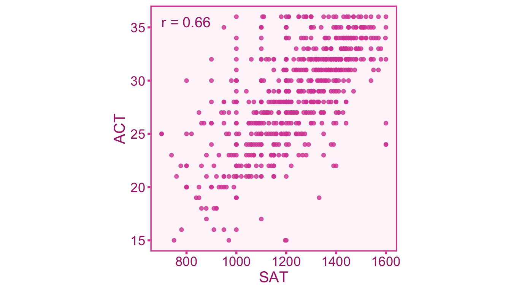
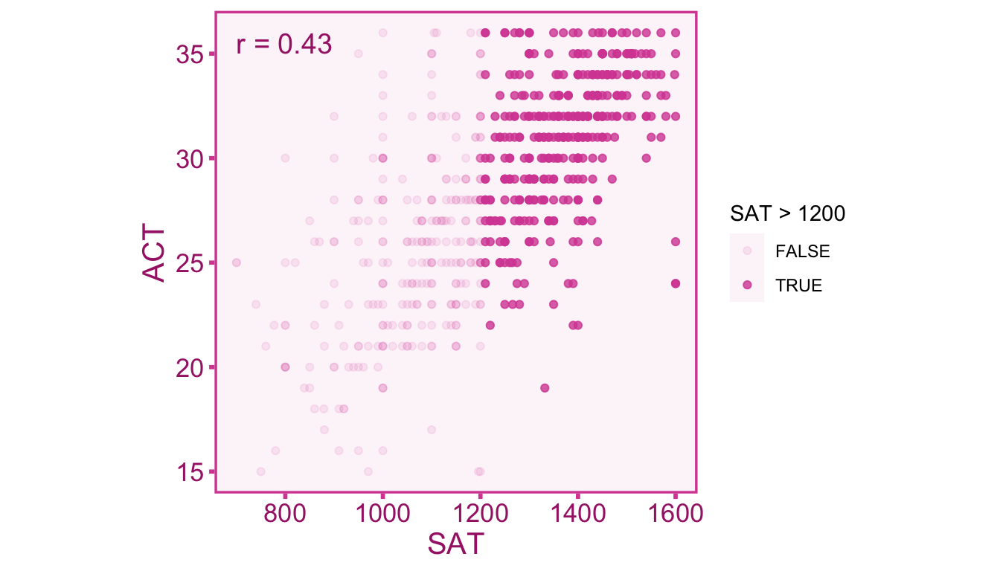
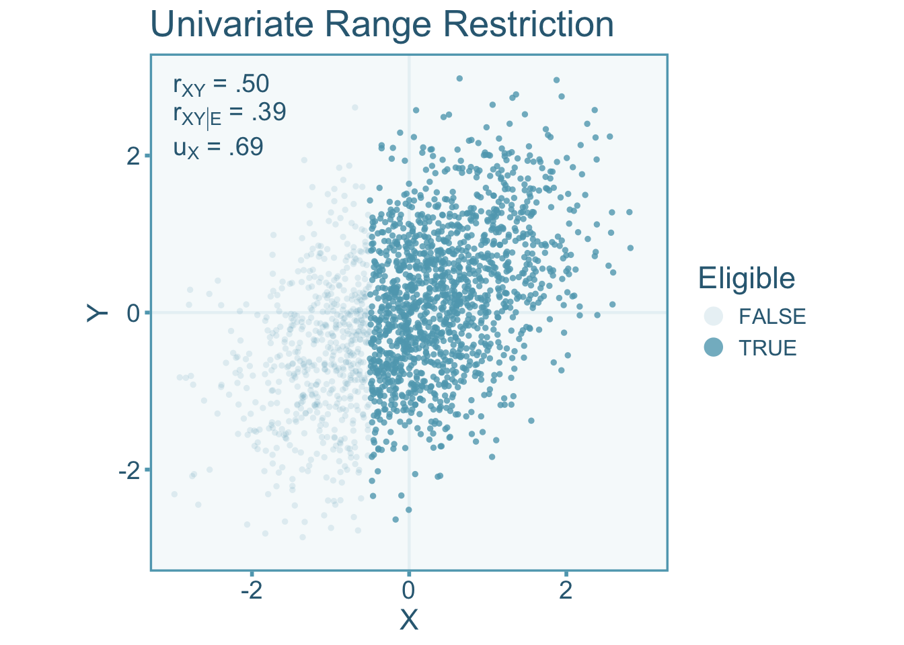
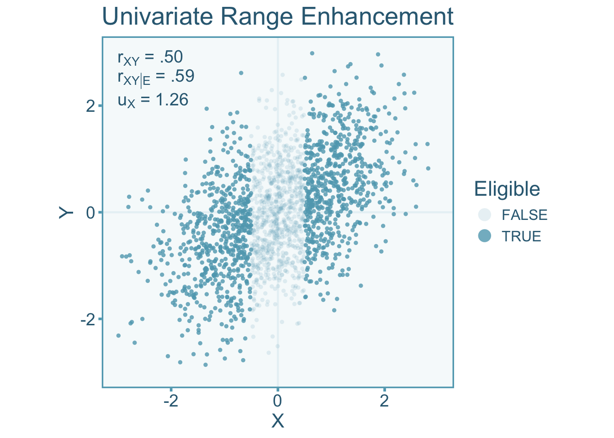
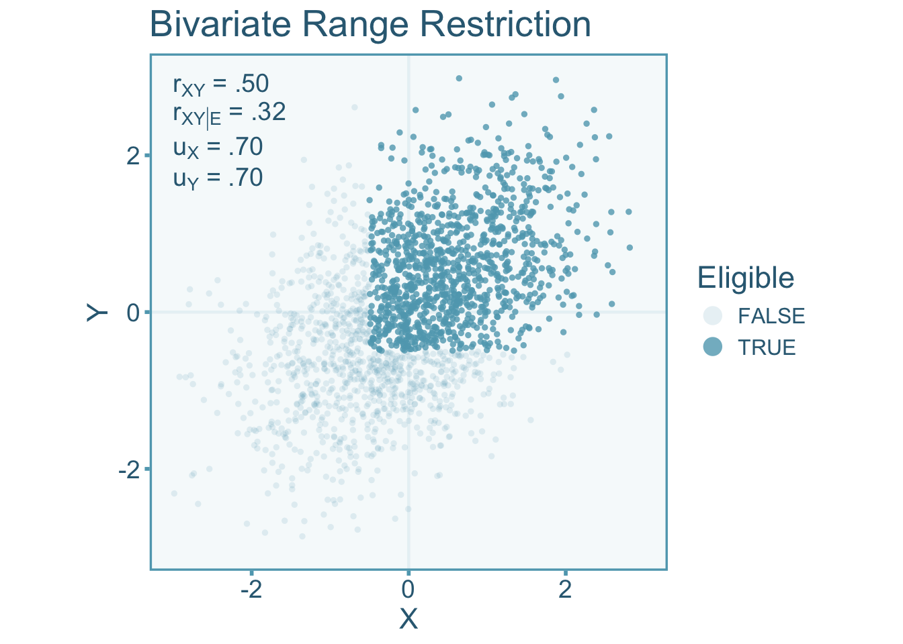
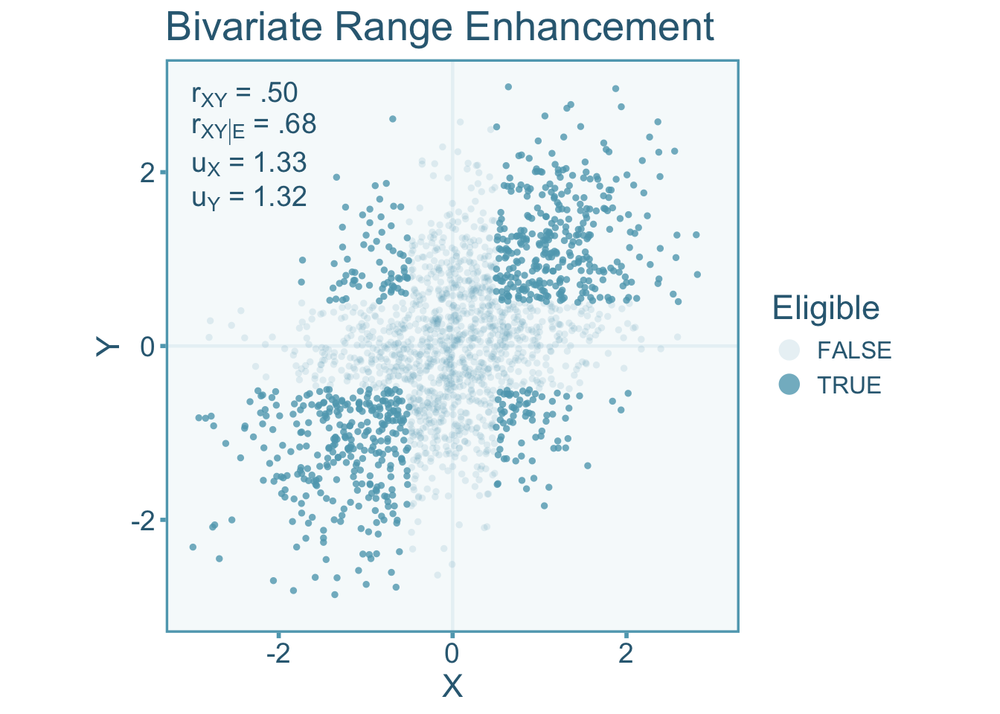

10 Direct Selection
10.1 Introduction
Direct selection occurs when subjects are explicitly selected based on some eligibility criterion on the variables of interest (rather than a third variable). Range restriction is a form of selection bias that describes a situation where there is less variation in our sample then there is in the population. Whereas range enhancement indicates that there is more variation in a sample then there is in the population.
Example 10.1 (Correlation between Test Scores) The chapter on effect sizes introduced in example relating the SAT and ACT (two college admissions test in the United States). Recall that the data set consists of 668 individuals who took both the SAT and the ACT from Revelle, Wilt, and Rosenthal (2010) can be used to estimate the correlation. The data set splits the SAT test into Quantitative (SATQ) and Verbal (SATV) subtests which each range from 200-800, whereas the ACT is reported as a score from 1-36. We can plot out the relationship between the total SAT score (SATV + SATQ) and the ACT scores with a scatter plot (see Figure 4.3).
In the Figure 11.1 we see a strong correlation of .66 between test scores. Now let’s say we only study individuals from an elite college that requires students to have a minimum SAT score of 1200. Therefore all the individuals below 1200 would not be included in this sample. Let’s see how that impacts the correlation:

As we can see in Figure 11.2 the correlation is attenuated from \(r=.66\) to \(r=.43\) when the range of students is restricted to SAT scores above 1200.
10.2 Study Population
Recall in the first content chapter on probability and random variables, we defined a study sample \(\mathcal{S}\) as being all possible outcomes of a random draw of individuals from the study population \(\mathcal{E}\subseteq \Psi\), where \(\Psi\) is our population of interest. However we were vague about what \(\mathcal{E}\) actually is. In situations of direct selection we can define \(\mathcal{E}\) more concretely with some eligibility criterion. For univariate direct selection, the study population can be defined as a subset of one of the random variables of interest,
\[ \mathcal{E} = \left\lbrace\vphantom{\int} \psi\in \ell\left(X^{-1}(B)\right)\;\middle\vert\; B \in \mathcal{B}_\mathbb{R} \right\rbrace \subseteq \Psi, \]
where \(B\) is some Borel set on the real line and \(\ell\) is the assignment to individual function. Most often \(B\) will be some interval on the real-line, for instance, the SAT and ACT example restricted scores above SAT > 1200 therefore the eligible population is any person scoring within the interval \(B=[1200,1600]\) (where 1600 is a perfect score). For bivariate direct selection, both variables of interest are used to define the population,
\[ \mathcal{E} = \left\lbrace\vphantom{\int} \psi\in \ell\left(X^{-1}(B_1)\cap Y^{-1}(B_2)\right)\;\middle\vert\; B_1,B_2 \in \mathcal{B}_\mathbb{R} \right\rbrace \subseteq \Psi, \]
It is often the case that selection is made via observed proxies, \(\widetilde{X}\) and \(\widetilde{Y}\), since these are usually what we actually observe. The selection in the SAT and ACT example was based on the observed scores of the SAT.
10.3 Quantifying Direct Selection with the u-ratio
The distribution of scores in the population of interest \(\Psi\) will exhibit a greater (or lesser) degree of variability compared to the study population \(\mathcal{E}\). Therefore the standard deviation of scores in the target population (\(\sigma_{X}\)) will differ from that of the study population (\(\sigma_{X|\mathcal{E}}\)). To index the difference between the two standard deviations, we can calculate the \(u\)-ratio Wiernik and Dahlke (2020). The \(u\)-ratio is defined as the ratio between the standard deviations of the population (\(\sigma_{X|\mathcal{E}}\)) under selection and the target population (\(\sigma_{X}\)) such that,
\[ \upsilon_X = \frac{\sigma_{X|\mathcal{E}}}{\sigma_{X}} \]
Where \(\upsilon_{X}\) denotes the population \(u\)-ratio. The \(u\)-ratio in cases of range restriction will exist in the interval (0–1). Conversely, when the \(u\)-ratio is greater than 1 it is indicative of range enhancement. For a sample, the \(u\)-ratio is calculated from sample standard deviations,
\[ u_X = \frac{s_{X|\mathcal{E}}}{s_X} \tag{10.1}\]
Where \(u_{X}\) denotes the sample \(u\)-ratio. The target population standard deviation is often quite difficult to estimate since we generally do not have access to an estimate of the population of interest. However, the unrestricted standard deviation can be estimated from some reference or norm study that is representative of the population of interest. For example, the distribution full-scale IQ scores derived from the Wechsler Adult Intelligence Test has a standard deviation of 15 in the US population (Wechsler 2008). We can use this estimate as the standard deviation for the target population. Lets say we select a sample from members of Mensa, a high IQ society, where members are specifically selected on the basis high IQ scores. If the standard deviation of Mensa members is 5, then the \(u\)-ratio would be,
\[ u_\widetilde{X} = \frac{s_{\widetilde{X}|\mathcal{E}}}{s_\widetilde{X}} = \frac{5}{15}= .33, \]
where \(u_\widetilde{X}\), \(s_\widetilde{X}\), and \(s_{\widetilde{X}|\mathcal{E}}\) are the sample estimate counterparts of the components in Equation 11.1, but now they with respect to observed IQ scores. If an estimate of the population standard deviation is not readily available, then a reliability coefficient from the reference sample and the sample under selection can be used to estimate the \(u\)-ratio of observed scores,
\[ u_\widetilde{X} = \sqrt{\frac{1-r_{\widetilde{X}\widetilde{X}'}}{1-r_{\widetilde{X}\widetilde{X}'|\mathcal{E}}}}. \]
Where \(r_{XX'|\mathcal{E}}\) and \(r_{XX'}\) are the reliability estimates within the study sample and reference sample respectively.
10.4 Correcting Correlations
10.4.1 Defining our Target Correlation
We want to estimate the correlation in the target population between true scores of the independent (\(X\)) and dependent variable (\(Y\)). Within a study that suffers from direct selection and measurement error, the observed score correlation will be biased relative to our target true score population correlation, \(\rho_{XY}\). We can model observed score correlation under direct selection as,
\[ r_{\widetilde{X}\widetilde{Y}|\mathcal{E}} = \alpha \rho_{XY} + \varepsilon_r \]
Where \(\alpha\) is the artifact attenuation/inflation factor and \(\varepsilon_r\) is the sampling error term.
10.4.2 Artifact Correction for Correlations
The Univariate Case
Let \(X\) and \(Y\) be linearly related and homoscedastic. Consider the eligibility of an individual study population is on \(X\) and not \(Y\). It is important to note, that if there is direct selection one of the two variables, then there will be indirect selection in the other variable as long as they are correlated. This would suggest that if \(u_X\neq 1\) and \(\rho_{XY}\neq 0\) then \(u_Y\neq 1\). Lets visualize the correlation between independent (\(X\)) and dependent (\(Y\)) with zero-means and unit variance under univariate direct range restriction (see Figure 10.3). Defining the study population as individuals with an \(X\) value greater than –.5,
\[ \mathcal{E} = \left\lbrace\vphantom{\int} \psi\in \ell\left(X^{-1}([-.5,\infty])\right) \right\rbrace \subseteq \Psi, \]
The scores of individuals that have been selected will show less variance than the population pool. Specifically, the scenario below shows a \(u\)-ratio of \(u_X=0.69\) in the independent variable. We see in Figure 10.3 that the correlation in the restricted scores \((r_{XY|\mathcal{E}})\) are attenuated relative to the unrestricted correlation (\(r_{XY}\), indicative of \(\alpha<1\)).

We can also visualize what happens to the correlation when the range is enhanced. Enhancement can be accomplished by selecting individuals at the ends of the distribution (Taylor and Griess 1976). Therefore we can define the study population as anyone below -.5 and above .5,
\[ \mathcal{E} = \left\lbrace\vphantom{\int} \psi\in \ell\left(X^{-1}([\infty,-.5] \cup [.5,\infty])\right) \right\rbrace \subseteq \Psi, \]
In the visualization below (Figure 10.4), we see an opposite effect on the correlation, that is, an inflation of the unrestricted correlation rather than an attenuation (indicating \(\alpha>1\)) like we see under range restriction. The scenario below has a \(u\)-ratio \(u_X=1.26\) in the independent variable.

It starts to become apparent that if \(u_X>1\) (i.e., \(s_X<s_{X|\mathcal{E}}\)) the observed correlation is inflated and when \(u_X<1\) (i.e., \(s_X>s_{X|\mathcal{E}}\)) it becomes attenuated (Sackett and Yang 2000).
The attenuation/inflation of the correlation is dependent on the magnitude of the correlation, this is due to the fact that selection occurs on \(X\) and \(X\) is correlated with \(Y\), there will also be indirect range restriction in \(Y\). Therefore unlike other artifacts that have been discussed so far, range restriction/enhancement depends not only on the artifact value (i.e., the \(u\)-ratio), but also on the restricted correlation (Hunter, Schmidt, and Le 2006). Assuming linearity and homoscedasticity between \(X\) and \(Y\), the attenuation/inflation factor \(\alpha\) is defined as (adapted from equation 4, Hunter, Schmidt, and Le 2006),
\[ \alpha = \upsilon_X \sqrt{1+\rho_{XY|\mathcal{E}}^2\left(\frac{1}{\upsilon_X}-1\right)} \tag{10.2}\]
However the population values of \(\upsilon_X\) and \(\rho_{XY|\mathcal{E}}\) are unknown and must be estimated. Therefore a sample estimate of the artifact factor \(a\) can be computed as,
\[ a = u_X \sqrt{1+\rho_{XY|\mathcal{E}}^2\left(\frac{1}{u_X}-1\right)} \tag{10.3}\]
The correction formula for univariate direct selection was first developed by Pearson (1903) and also provided more recently by Hunter, Schmidt, and Le (2006) and Wiernik and Dahlke (2020). To correct for the systematic bias in correlations, we can divide the correlation under selection by the attenuation factor,
\[ r_{XY} = \frac{r_{XY|\mathcal{E}}}{a} = \frac{r_{XY|\mathcal{E}}}{u_X \sqrt{1+\rho_{XY|\mathcal{E}}^2\left(\frac{1}{u_X}-1\right)}}. \tag{10.4}\]
If the raw data is available, a bootstrapping procedure is preferred to estimate the sampling variance of the corrected correlation. If it is unavailable then we can treat the factor \(a\) as known and obtain an estimate of the sampling variance,
\[ \widehat{\mathrm{var}}(r_{XY}) = \frac{\widehat{\mathrm{var}}\left(r_{XY|\mathcal{E}}\right)}{a^2} = \frac{\widehat{\mathrm{var}}\left(r_{XY|\mathcal{E}}\right)}{u_X \sqrt{1+\rho_{XY|\mathcal{E}}^2\left(\frac{1}{u_X}-1\right)}^2}. \tag{10.5}\]
If we want to also correct for measurement error in both samples, then we can also incorporate the reliability into these equations. Note that the following equations will incorporate the reliability within the selected sample (\(\rho_{\widetilde{X}\widetilde{X}'|\mathcal{E}}\)) rather than the reference sample (\(\rho_{\widetilde{X}\widetilde{X}'}\)). If the reliability coefficient comes from the reference sample, then we can estimate the selected (restricted or enhanced) sample reliability with the corresponding \(u\)-ratio,
\[ \rho_{\widetilde{X}\widetilde{X}'|\mathcal{E}} = 1-\frac{1-\rho_{\widetilde{X}\widetilde{X}'}}{\upsilon^2_\widetilde{X}}. \tag{10.6}\]
Then we can use the reliability and \(u\)-ratios simultaneously to calculate a new attenuation/inflation factor that accounts for both bias in measurement error and direct selection,
\[ \alpha = \upsilon_\widetilde{X}\sqrt{1-\upsilon_\widetilde{X}^2(1-\rho_{\widetilde{X}\widetilde{X}'|\mathcal{E}})}\sqrt{\rho_{\widetilde{Y}\widetilde{Y}'|\mathcal{E}}+\rho_{\widetilde{X}\widetilde{Y}|\mathcal{E}}^2\left(\frac{1}{\upsilon^2_\widetilde{X}}-1\right)}. \]
Where the sample estimate of \(\alpha\) is
\[ a = u_\widetilde{X}\sqrt{1-u_\widetilde{X}^2(1-r_{\widetilde{X}\widetilde{X}'|\mathcal{E}})}\sqrt{r_{\widetilde{Y}\widetilde{Y}'|\mathcal{E}}+r_{\widetilde{X}\widetilde{Y}|\mathcal{E}}^2\left(\frac{1}{u^2_\widetilde{X}}-1\right)}. \]
Then we can use the sample estimate to correct the correlation and to obtain a consistent estimate of the true score correlation in the target population (adapted from table 3, Wiernik and Dahlke 2020),
\[ r_{XY}=\frac{r_{XY|\mathcal{E}}}{a} =\frac{r_{XY|\mathcal{E}}}{u_\widetilde{X}\sqrt{1-u_\widetilde{X}^2(1-r_{\widetilde{X}\widetilde{X}'|\mathcal{E}})}\sqrt{r_{\widetilde{Y}\widetilde{Y}'|\mathcal{E}}+r_{\widetilde{X}\widetilde{Y}|\mathcal{E}}^2\left(\frac{1}{u^2_\widetilde{X}}-1\right)}} \]
Again, a bootstrapping procedure is best for commputing the sampling variance if the raw data is available. Otherwise, if we treat \(a\) as known we can be adjust the sampling variance as,
\[ \widehat{\mathrm{var}}(r_{XY}) = \frac{\widehat{\mathrm{var}}(r_{XY|\mathcal{E}})}{a^2} \]
There are three important things to note about the equations in this section: 1) these corrections assume linearity and homoskedasticity in the target population population, 2) all these corrections show selection on the independent variable, \(X\), however it does not matter whether univariate selection is on \(X\) or \(Y\), the corrections can be applied in the same fashion (just remember to flip \(X\) and \(Y\) and vice versa in the equations), 3) The corrections assume that any range restriction/enhancement observed in the non-selection variable (in our example this would be \(Y\)) is mediated by the range restriction/enhancement in the variable under selection (i.e., \(X\)).
The Bivariate Case
Bivariate direct range restriction/enhancement occurs when selection occurs on both variables of interest, therefore the selection function will be a function of \(X\) and \(Y\). Let’s visualize the correlation between independent (\(X\)) and dependent (\(Y\)) variables under bivariate range restriction by only selecting individuals above some cut off point for both \(X\) and \(Y\) (see Figure 10.5). For this example the selection function is
\[ \mathcal{E} = \left\lbrace\vphantom{\int} \psi\in \ell\left(X^{-1}([-.5,\infty]) \cap Y^{-1}([-.5,\infty])\right) \right\rbrace \subseteq \Psi, \]
The scores of individuals that have been selected will show less variance than the entire pool of individuals. Specifically, the scenario below shows a \(u\)-ratio of about 0.70 in the independent variable and dependent variables. We see Figure 10.5 that the correlation in the restricted sample (\(r_{XY|\mathcal{E}}\)) is attenuated relative to the unrestricted correlation (\(r_{XY}\)).

Likewise let’s visualize what happens to the correlation when the range is enhanced. Enhancement in both variables can be accomplished by selecting individuals at the ends of the distribution of \(X\) and \(Y\). Therefore we can define the selection function as,
\[ \mathcal{E} = \left\lbrace\vphantom{\int} \psi\in \ell\left(X^{-1}([-\infty,-.5] \cup [.5,\infty]) \cap Y^{-1}([-\infty,-.5] \cup [.5,\infty])\right) \right\rbrace \subseteq \Psi, \]
Note that this type of selection would be exceedingly rare to see in practice. In Figure 10.6, we see inflation of the enhanced correlation relative to the target correlation. The scenario below has a \(u\)-ratio of about 1.32 in both the independent variable and dependent variable.

A correction procedure for bivariate range restriction is much more complicated than the univariate formulation. To break down the correction formula into simpler parts, let us first define a factor we will denote with the Greek letter \(J_{XY}\),
\[ J_{XY} = \frac{\upsilon_X \upsilon_Y\left(\rho_{XY|\mathcal{E}}^2-1\right)}{2\rho_{XY|\mathcal{E}}}. \tag{10.7}\]
A sample estimate can be denoted as \(\hat{J}_{XY}\) and computed as,
\[ \hat{J}_{XY} = \frac{u_X u_Y\left(r_{XY|\mathcal{E}}^2-1\right)}{2r_{XY|\mathcal{E}}}. \]
This factor contains all the parameters needed to correct the correlation coefficient under direct selection. An unbiased estimate of the target population correlation can obtained by the following correction formula (adapted from table 3 Wiernik and Dahlke 2020),
\[ r_{XY} = \hat{J}_{XY} + \mathrm{sign}\left[r_{XY|\mathcal{E}}\right]\sqrt{\hat{J}_{XY}^2+1}, \tag{10.8}\]
where \(\mathrm{sign}[\cdot]\) is the sign function denoting whether it is positive (\(\mathrm{sign}[\cdot>0]=1\)), negative (\(\mathrm{sign}[\cdot]=-1\)) or zero (\(\mathrm{sign}[\cdot]=0\)). The sample estimate of the artifact attenuation/inflation factor can be expressed simply as the ratio of the observed correlation and the corrected correlation \(a = r_{XY|\mathcal{E}}/r_{XY}\). If Where the standard error can be computed from calculating the artifact factor (\(a\)) from the corrected and restricted/enhanced correlation,
\[ \widehat{\mathrm{var}}(r_{XY}) = \frac{\widehat{\mathrm{var}}\left(r_{XY|\mathcal{E}}\right)}{a}= \frac{\widehat{\mathrm{var}}\left(r_{XY|\mathcal{E}}\right)}{\left[\frac{r_{XY|\mathcal{E}}}{r_{XY}}\right]}. \tag{10.9}\]
Now we can also incorporate measurement error into the correction formula. Note that the following equations will incorporate the reliability within the selected sample (\(r_{\widetilde{X}\widetilde{X}'|\mathcal{E}}\)) rather than the unrestricted population (\(r_{\widetilde{X}\widetilde{X}'}\); see Equation 10.6 on converting to the selected sample). Then we can use the restricted/enhanced (selected) sample reliability and the \(u\)-ratios in the following equation to obtain an consistent estimate of the target true score population correlation,
\[ r_{XY} = \frac{\hat{J}_{\widetilde{X}\widetilde{Y}} + \text{sign}\left[r_{\widetilde{X}\widetilde{Y}|\mathcal{E}}\right]\sqrt{\hat{J}_{\widetilde{X}\widetilde{Y}}^2+1}}{\sqrt{1-u_\widetilde{X}^2\left(1-r_{\widetilde{X}\widetilde{X}'|\mathcal{E}}\right)}\sqrt{1-u_\widetilde{Y}^2\left(1-r_{\widetilde{Y}\widetilde{Y}'|\mathcal{E}}\right)}}. \]
If the reliability coefficient comes from the unrestricted population, the formula simplifies to,
\[ r_{XY} = \frac{\hat{J}_{\widetilde{X}\widetilde{Y}} + \text{sign}\left[r_{\widetilde{X}\widetilde{Y}|\mathcal{E}}\right]\sqrt{\hat{J}_{\widetilde{X}\widetilde{Y}}^2+1}}{\sqrt{r_{\widetilde{X}\widetilde{X}'}}\sqrt{r_{\widetilde{Y}\widetilde{Y}'}}}. \]
We can use the same equation as Equation 10.9 to calculate the corrected standard error. The standard error can then be calculated as,
\[ \widehat{\mathrm{var}}(r_{\widetilde{X}\widetilde{Y}}) = \frac{\widehat{\mathrm{var}}\left(r_{\widetilde{X}\widetilde{Y}|\mathcal{E}}\right)}{a}= \frac{\widehat{\mathrm{var}}\left(r_{\widetilde{X}\widetilde{Y}|\mathcal{E}}\right)}{\left[\frac{r_{\widetilde{X}\widetilde{Y}|\mathcal{E}}}{r_{\widetilde{X}\widetilde{Y}}}\right]}. \]
10.5 Correcting Standardized Mean Differences (SMDs)
10.5.1 Defining our Target SMD
The quantity of interest is the target population SMD between actual members of groups 0 and 1. We can denote this SMD as \(\delta_{GY}\). Within a study that suffers from direct selection, the observed SMD (\(d_{GY|\mathcal{E}}\)) will be biased relative to the target, \(\delta_{GY}\). We can model the observed standardized mean difference as,
\[ d_{GY|\mathcal{E}}= \alpha\delta_{GY} + \varepsilon_d. \]
Where \(\alpha\) is the attenuation/inflation factor and \(\varepsilon_d\) is the sampling error term.
10.5.2 Artifact Correction for SMDs
10.5.2.1 Selection on the Continuous Variable
To correct for direct selection on the continuous variable, we can first convert the observed SMD (\(d_{GY|\mathcal{E}}\)) to a point-biserial correlation (\(r_{GY|\mathcal{E}}\)). Converting \(d_{GY|\mathcal{E}}\) to \(r_{GY|\mathcal{E}}\) can be done by using the observed proportion of individuals in group 0 (or 1), \(p_{G|\mathcal{E}}\),
\[ r_{GY|\mathcal{E}} = \frac{d_{GY|\mathcal{E}}}{\sqrt{\frac{1}{p_{G|\mathcal{E}}(1-p_{G|\mathcal{E}})}-d_{GY|\mathcal{E}}^2}}. \]
We can then correct the point-biserial correlation for univariate direct selection using the formulas in Section 10.4.2. Note that if you want to correct for measurement error as well, replace \(r_{\widetilde{X}\widetilde{X}'}\) with \(r_{\widetilde{G}\widetilde{G}'}\) (i.e., group classification reliability; see chapter on group misclassification) whenever you are working with SMDs. Once we obtained the corrected correlation, \(r_{GY}\), we can convert back to a standardized mean difference, we need to use an adjusted group proportions, \(p_G\):
\[ d_{GY} = \frac{r_{GY}}{\sqrt{p_G\left(1-p_G\right)\left(1-r_{GY}^2\right)}}. \]
Where the adjusted group \(p_G\) is estimated with the following formula
\[ p_G = \frac{1}{2}-\frac{1}{2}\sqrt{1-4p_{G|\mathcal{E}}(1-p_{G|\mathcal{E}})\left[1+r_{GY|\mathcal{E}}^2\left(\frac{1}{u^2_X}-1\right)\right]} \]
The adjusted proportion, \(p_G\), can also be estimated from the proportion of individuals in the target population (e.g., the proportion of men vs women in the general population). This adjustment is necessary in order to account for indirect selection in the grouping variable. This is similar to the situation described in Section 10.4.2, where one variable suffers from direct range restriction and any variable that is correlated with it, will suffer from indirect selection. The corresponding corrected sampling error can also be computed with the observed and adjusted proportions such that,
\[ \widehat{\mathrm{var}}(d_{GY}) = \frac {\widehat{\mathrm{var}}\left(d_{GY|\mathcal{E}}\right)\left(\frac{r_{GY}}{r_{GY|\mathcal{E}}}\right)^2} {\left(1+d_{GY|\mathcal{E}}^2\,p_{G|\mathcal{E}}[1-p_{G|\mathcal{E}}]\right)^2\left(d_{GY|\mathcal{E}}^2+\frac{1}{p_{G|\mathcal{E}}(1-p_{G|\mathcal{E}})}\right)p_G(1-p_G)(1-r_{GY}^2)^3}. \]